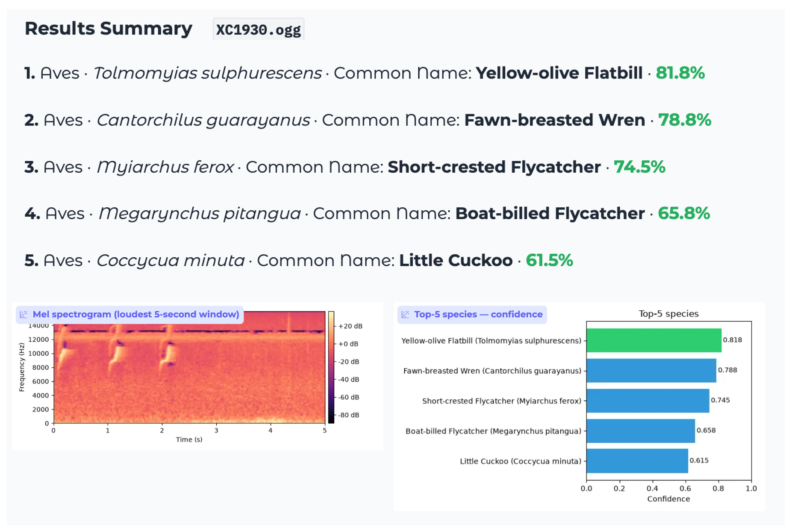

Project Overview
This project tackles offline acoustic wildlife detection in Brazil's Pantanal wetlands: identify 234 species (birds, amphibians, mammals, reptiles, insects) from 5-second audio windows. Scoring is macro-averaged ROC-AUC; the Kaggle submission must run CPU-only within 90 minutes. The central difficulty is the focal → soundscape domain gap — training data is mostly close-mic focal recordings while test data is far-field, multi-species soundscapes with heavy background noise.
Current champion (June 2026)
v7 ONNX 4-member ensemble — Private LB 0.89774 / Public 0.89535 (+0.035 private vs the former PyTorch champion). This was an inference-only breakthrough: no new CNN training. The stack combines three exported EfficientNet checkpoints with a live native Perch v2 member via ONNX Runtime on CPU, prob-space blending, and calibrated post-processing.
Gap to the 0.90 target: +0.00226 private. Inference-only tuning has plateaued; next lever is Phase E training.

Source Dataset

Data comes from the Kaggle BirdCLEF+ 2026 competition:
- Focal clips: short, single-species, close-mic training recordings (~35k used in the full pipeline)
- Soundscapes: long-form, multi-species field recordings (10,658 labeled segments for pseudo-labeling)
- 234 taxonomic classes across 161 genera, monitored at multiple Pantanal sites
- Site-22 held out as the leak-free generalisation proxy throughout training and harness gating
Architectural Evolution
From Phase 1 onward the CNN front-end was fixed: 128-mel log-spectrograms, 5 s windows @ 32 kHz, per-sample z-score, feeding an EfficientNet backbone with fp32-guarded GEM frequency pooling and an SED attention head. Training followed supervised → Noisy Student iter1 → Noisy Student iter2 on focal + labeled-soundscape streams.
-
Phase 0 — Minimal CPU baseline (EfficientNet-V2-B0, ImageNet pretraining):
Deliberately stripped pipeline to meet the 90-minute budget: 64 mels, min–max norm, global-average pool + linear head (no SED/GEM), 6 epochs on ≤3,000 focal clips, no self-training. Result: Private 0.499 / Public 0.555 — near-random, but proved the harness worked.
-
Phase 1 — Full ML stack (EfficientNet-B0, large-scale pretraining):
Rebuilt everything: ns_jft B0 backbone (JFT-300M + Noisy Student pretraining), 128-mel z-score front-end, ThreePoolHead + frame-max aux loss, fp32 GEM guard, BN recalibration, full focal + LSS data, 36 epochs with Noisy Student on 10,658 soundscapes. Result: Private 0.831 / Public 0.799 (+0.332 private vs Phase 0).
-
Phase 2 — B0 + Perch distillation:
Added Google Perch v8 cosine distillation via 36,073 precomputed embeddings (dim 1280) during supervised training only — zero inference cost. Best single CNN model: Private 0.84846 / Public 0.82698. Site-22 0.731; per-taxon: Amph 0.740, Aves 0.704, Mamm 0.756.
-
Phase 3 — EfficientNetV2-S + export bug (v3):
Swapped to V2-S backbone; scored Private 0.777 — an export bug shipped the early supervised-only model snapshot instead of the final self-trained checkpoint after two rounds of soundscape learning, not a backbone failure. Clean rerun (Phase 3 without Perch): Private 0.78679.
-
Phase 4 — V2-S + Perch + export fix (v4):
Added Perch distillation and a deterministic checkpoint-selection policy so the fully self-trained model is always packaged for submission — never an earlier supervised-only snapshot. Largest internal lift on greedy coverage (+0.064) but LB Private 0.803 — still below B0 baseline. The 2×2 ablation confirmed: B0 beats V2-S regardless of Perch; Perch adds a consistent ~+0.017 private lift on both backbones.
-
Phase 5 — Measure-first ensemble (v5):
No new training. Blended existing members on the Site-22 harness; fixed fractional time-shift TTA (+0.0165 Site-22 lift). No free blend beat the B0+Perch anchor. A coverage cap bug (200/10,658 files) suppressed one local smoke run — lesson carried forward for full-soundscape inference.
-
Phase 6 — Ensemble + rank-vs-prob bug (v6):
Trained a second B0 model without Perch distillation (provenance decorrelation, harness +TTA 0.7323). Two-member Kaggle submit scored Private 0.816 — flat vs v5 because rank blending was paired with probability-tuned post-processing. Fix: switched to probability-space blending so ensemble scores stay compatible with calibrated post-processing. Best PyTorch 2-member blend: Private 0.81465. PyTorch single-model champion (B0+Perch + TTA fix): Private 0.86259.
-
Phase 7 — ONNX 4-member ensemble (v7):
Replaced PyTorch forwards with ONNX Runtime to fit 4 models + TTA in the CPU budget. Members: B0+Perch (Phase 2), B0 without Perch (Phase 6), V2-S+Perch (Phase 4), and native Perch v2 at inference. Champion: Private 0.89774. D1/D2+D3 confirmatory submits regressed (0.89004 / 0.89348) — local Site-22 proxies did not predict LB for post-proc tuning.


Model Card
Verified clean runs and scored inference submissions. Metric: macro-averaged ROC-AUC over 234 species on 5-second windows. Erroneous exports (e.g. the original Phase 3 packaging mistake) and rejected harness runs (e.g. the failed pseudo-label training experiment) excluded.
Leaderboard ranking (Private LB)
| Rank | Run | Private | Public |
|---|---|---|---|
| 1 | v7 ONNX 4-member (B0+Perch ⊕ B0 no-Perch ⊕ V2-S+Perch ⊕ native Perch) | 0.89774 | 0.89535 |
| 1b | v7 ONNX confirmatory (tuned genus mirroring & Perch gating) | 0.89348 | 0.89177 |
| 1c | v7 ONNX D1 clean resubmit | 0.89004 | 0.88300 |
| 2 | PyTorch single-model (B0+Perch + TTA) | 0.86259 | 0.84613 |
| 3 | Phase 2 (B0 + Perch distill, single CNN) | 0.84846 | 0.82698 |
| 4 | Phase 1 (B0, no Perch) | 0.831 | 0.799 |
| 5 | 2-member prob-blend (B0+Perch + B0 no-Perch) | 0.81465 | 0.80270 |
| 6 | Phase 4 (V2-S + Perch) | 0.803 | 0.797 |
| 7 | Phase 3 clean rerun (V2-S, no Perch) | 0.78679 | 0.78683 |
| 8 | Phase 0 baseline (minimal submit) | 0.499 | 0.555 |
Training validation (final self-trained checkpoint)
| Run | Focal | Site-22 | Greedy | LSS | Site-22 taxon (Amph / Aves / Mamm) |
|---|---|---|---|---|---|
| Phase 1 (B0, no Perch) | 0.943 | 0.683 | 0.767 | 0.725 | 0.757 / 0.604 / 0.700 |
| Phase 2 (B0 + Perch) | 0.952 | 0.731 | 0.745 | 0.738 | 0.740 / 0.704 / 0.756 |
| Phase 3 clean rerun (V2-S, no Perch) | — | 0.652 | 0.767 | 0.709 | — |
| Phase 4 (V2-S + Perch) | 0.958 | 0.654 | 0.824 | 0.739 | 0.735 / 0.590 / 0.431 |
Evaluation layers
| Layer | Protocol | Use for |
|---|---|---|
| Training notebook | Site-22 macro-AUC, no TTA, per-phase peaks | Training progress, export decisions |
| Site-22 harness | 954 windows, BN recal, prob-space TTA, real post-proc | Ensemble gate, blend A/B, promotion decisions |
| Kaggle LB | Hidden test set, CPU-only submit | Authoritative final score |
Site-22 is the held-out monitoring site. Harness and LB can disagree on ensembles — the V2-S+Perch member failed standalone Site-22 (0.645) yet helped the 4-member ONNX stack reach 0.898.
Inference Stack (Champion)
The 0.89774 score came from inference engineering, not new CNN training. Pre-exported ONNX weights from earlier clean runs are combined at submit time:
| Member | Source run | Role |
|---|---|---|
| B0 + Perch (anchor CNN) | Phase 2 training run | Primary distilled model |
| B0 without Perch | Phase 6 training run | Decorrelated second opinion (different training recipe) |
| V2-S + Perch | Phase 4 training run | Backbone-family diversity |
| Native Perch v2 | Google Perch v2 (external) | Live acoustic classifier mapped to 234 competition classes |
Pipeline at score time:
- Decode once per soundscape; build log-mel for CNN members, raw waveform for Perch
- ONNX Runtime 1.27 on CPU (offline wheels — Kaggle submit has no internet)
- Prob-space TTA — ±0.5 s time shift, 3 variants, averaged per member
- Prob-blend the three CNN members; apply Perch rank gate on combined output
- Post-processing at champion settings: genus-level score mirroring, temporal continuity smoothing, and moderate Perch gating on the blended CNN output
- Budget guard — ~8.3 files/min measured; ~72 min extrapolated for 600 hidden test files (within 90 min)
PyTorch is retained only for audio I/O (decode + mel); all forward passes run through ORT. Pure PyTorch cannot fit 4 models + TTA in the CPU budget — ONNX was load-bearing, not optional.
MLOps & Reproducibility
Why MLOps mattered here
This was a months-long solo research effort spanning dozens of training runs, ensemble experiments, and Kaggle submissions. Without disciplined experiment tracking, it is easy to ship the wrong model snapshot, confuse a local validation win with a real leaderboard gain, or repeat an expensive GPU run with no clear hypothesis. MLOps — in the practical sense of machine learning operations — turned ad-hoc notebook work into a repeatable, auditable process: every run has a stated goal, measured outcome, promotion decision, and a single place to see what the current champion is.
The v3 export bug is the clearest example: the model looked weaker than it was because the submission packaged an early checkpoint. Formal checkpoint-selection rules and a run registry prevent that class of silent failure from reaching production or competition submits.
Best practices incorporated
- Hypothesis before heavy training — each experiment states what it is testing and when to stop, avoiding open-ended GPU spend
- Central run registry — every experiment records its goal, configuration, metrics, artifacts, and final promote/reject/hold decision in one auditable place
- Site-22 promotion gate — no model joins the submission ensemble unless it clears a standalone quality bar on held-out audio and improves the blend in probability space with test-time augmentation
- Two-layer evaluation — training-time Site-22 tracks learning progress; a separate submission-parity harness mirrors real inference (recalibration, TTA, post-processing) before any Kaggle submit
- Deterministic packaging — submission bundles always prefer the final self-trained checkpoint over earlier supervised-only snapshots, regardless of misleading intermediate scores
- Champion tracking — a living dashboard shows the current best submission, timeline of runs, gate pass/fail status, and training curves without digging through notebooks
- Pre-submit checklist — blend mode, coverage, and inference budget are verified before a competition submit is allowed
- Documented invariants — non-negotiable rules earned through debugging (BatchNorm recalibration, fp32 guard on fragile pooling, train/inference front-end parity) are enforced across every run
Outcome
The champion ONNX ensemble (Private LB 0.89774) is the direct result of this discipline: only verified, correctly packaged models entered the four-member stack; rejected candidates (such as the failed pseudo-label training run) never reached submission. The remaining gap to 0.90 is now a focused training question, not an operational or tracking problem.
Key Lessons
The two largest early wins were debugging wins, not tuning wins: fp16 overflow in GEM
pooling (pow(p≈3) under AMP) and BatchNorm statistics mismatch at inference both collapsed
AUC to ≈0.5. Fixing them unlocked the Phase 0 → Phase 1 jump (+0.332 private LB) alongside the full
stack rebuild — better backbone, z-score 128-mel front-end, soundscape self-training, and SED head.
-
Trust Site-22, not focal AUC or the public leaderboard
Focal AUC (~0.94) and greedy coverage were optimistic; Site-22 (held-out monitoring site) was the honest generalisation proxy. The harness extends this with submission-parity TTA and post-processing.
-
The export path is as load-bearing as the model
v3's regression was an export bug: the submission packaged an early supervised-only snapshot instead of the final self-trained model after two rounds of soundscape learning. A deterministic checkpoint-selection policy fixed this — always ship the fully trained model, never an intermediate snapshot. Several runs peaked mid-training but still exported a later, weaker checkpoint until export policy was aligned with validation peaks.
-
Prob blend, not rank blend, for post-processed ensembles
v6 scored flat because rank-uniform scores were fed into probability-tuned post-processing (site/hour priors, score boosting, taxonomy smoothing). Switching to probability-space blending recovered the loss.
-
Native Perch > distillation-only; harness ≠ LB for ensembles
Running Perch live at inference diversifies error vs B0+Perch distill alone — the largest conceptual shift since the prob-blend fix. V2-S+Perch failed Site-22 standalone yet helped the 4-member ONNX stack reach 0.898; treat harness as a coarse gate, not an LB oracle.
-
B0 + ns_jft pretraining beats V2-S on this task
The 2×2 ablation showed pretraining provenance (+0.044 private) matters more than architecture depth. Perch distillation adds a consistent ~+0.017 lift regardless of backbone.
-
Single-model ceiling; ensemble + inference stack close the gap
Best single CNN: 0.848. PyTorch 1-member + TTA: 0.863. ONNX 4-member: 0.898. The remaining +0.002 to 0.90 likely needs the next training cycle (Phase E: soundscape Perch embeddings, then retraining with best-checkpoint export), not more inference tuning.
Key Concepts
Plain-English glossary for terms used above.
GEM pooling & fp16 overflow
Generalized mean pooling raises feature values to a power (~3), averages, then takes the root — between
average and max pooling. With p≈3, values like 50³ = 125,000 overflow fp16 under AMP.
Fix: run GEM/head in fp32 while the rest uses mixed precision.
BatchNorm recalibration
BN running stats learned on augmented training audio mismatch clean inference inputs, collapsing predictions. Recalibrate on clean soundscape-like audio before every eval/submit pass.
Analogy: calibrating a scale while wearing a backpack, then weighing without it.
Noisy Student self-training
Pseudo-label unlabeled soundscapes with the current model, then retrain on those labels with noise augmentation. Exposes the model to the far-field, multi-species domain it will be tested on.
Perch distillation vs native Perch
Distillation: precomputed Perch embeddings guide CNN training; teacher not run at inference. Native: Perch runs live as a fourth ensemble member at inference — diversifies errors beyond what distillation alone captures.
Prob blend vs rank blend
Prob blend averages sigmoid probabilities — compatible with logit-space post-processing. Rank blend converts scores to uniform ranks per class — breaks priors and smoothing tuned for probabilities. The v6 regression came from mixing these.
SED head & frame-max loss
The SED attention head weights each time frame; frame-max auxiliary loss supervises the loudest frame so brief calls (e.g. one 0.4 s vocalization in 5 s) are not drowned by global average pooling.
What's Next
The inference-only sprint is closed: D1, D2, and D2+D3 confirmatory Kaggle submits did not beat the champion. Phase E is the active training path:
- E1: Precompute Perch embeddings on full soundscape audio (not focal-heavy cache)
- E2: a new training cycle with soundscape-aware pseudo-labels and export of the best Site-22 checkpoint, not just the last training epoch
Target: close the remaining +0.00226 private gap to 0.90 macro-AUC.
Let's Connect
I enjoy discussing deep learning for environmental conservation, acoustic monitoring pipelines, and the engineering discipline behind competition-scale ML systems. Questions about ensemble design, ONNX inference, or MLOps gating are welcome.
Connect on LinkedIn